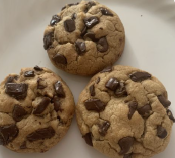

Receita Cookie

Ingredientes
- 125 g de manteiga sem sal em temperatura ambiente
- 1/2 xícara de açúcar mascavo
- 300 g de chocolate meio amargo picado
- 1 e 3/4 de xícara de farinha de trigo
- 1/4 xícara de chocolate em pó
- 3/4 xícara de açúcar
- 1 ovo
- 1 colher (chá) de fermento em pó
- 1 colher (chá) de essência de baunilha
Modo de preparo
- Preaquecer o forno em temperatura de 180°C, por cerca de 10 minutos.
- Distribuir os Cookies na assadeira mantendo uma distância de cerca de 6cm entre eles.
- Assar por aproximadamente 12 minutos a temperatura de 180°C.
- Ao retirar do forno, aguardar de 5 a 10 minutos para retirar os Cookies da assadeira
(risco do produto rachar).